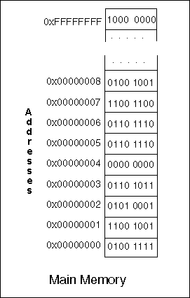

No — you use a "drivers view" of the car which is appropriate for driving and omits details not needed for that task. Of course you don't always use that view. If it starts raining and your car starts sputtering you might start thinking about the coil.
Part of what makes a professional is the ability to pick a useful model for the task at hand.

Modern computer systems nearly always use cache memory and virtual memory. But our abstract view of memory does not include them. The purpose of virtual memory is to make it appear as if a program has the full address space available.
So our programming model has the full 32-bit address space. The purpose of cache is to transparently speed up memory access. So our programming model does not include cache. Memory in the programming model is as follows:
DATA:
MIPS memory is an array of 232 bytes. Each byte has a 32-bit address. Each byte can hold an 8-bit pattern, one of the 256 possible 8-bit patterns. The addresses of MIPS main memory range from 0x00000000 to 0xFFFFFFFF.
However, user programs and data are restricted to the first 231 bytes. The last half of the address space is used for the operating system and for specialized purposes.
OPERATIONS:
The processor chip contains registers, which are electronic components that can store bit patterns. The processor interacts with memory by moving bit patterns between memory and its registers.
Bit patterns are copied between the memory and the processor in groups of one, two, four, or eight contiguous bytes.
When a group of bytes are copied in a load or store operation, only the address of the first byte of the group is specified.